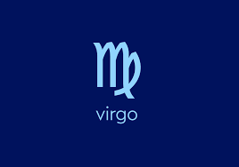
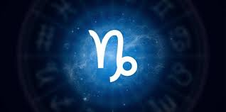

DAILY HORORSCOPE
Astrology is an extremely complex study, the most fundamental principle of astrology centers on the 12 familiar star signs of the zodiac. Over the centuries, each sign has developed its own associations — including myths, animals, and colors — and its own characteristics. Every sign is illuminated by its own point of view, complete with powerful strengths and exhausting weaknesses.
Aries(March 21-April 19):

Hello, Aries, and welcome to 2022! Remember, you're the first sign of the zodiac, and as a result, insist on getting your way (and usually do). But, dear ram, if your love life feels at a stand-still lately, that should change when Venus goes direct on Saturday, January 29. When Venus, the planet of romance, is retrograde, working through relationship issues can feel like navigating your way out of quicksand. Thankfully, the planet goes direct just in time for Valentine's Day, so be your bold Aries self and tell your crush or partner exactly what you want this year.
And, while you're at it, start making that birthday wishlist because Aries season begins on Sunday, March 20. As a fire sign, you feed on attention, and that's not a bad thing. You deserve to feel special during your birthday because you are. You're optimistic, brave, and your determination inspires others. Mercury, the planet of communication, enters your sign on Sunday, March 27, where it will stay until Sunday, April 10. While Mercury is in Aries, you'll find that communication flows easily, and friends and lovers text back promptly. So, start sending those birthday invitations. 2022 is a year for celebrating life, and your inner circle is ready to celebrate you.
Use the new moon in your sign on Friday, April 1, to write down a list of goals for your professional life. No, darling Aries, this isn't dull homework. You may be manifesting some money moves.. New moons mark new beginnings. Venus enters your sign on Monday, May 2, and will stay until Saturday, May 28. As discussed, Venus rules romance, but it's also the planet of beauty and abundance. So if you're going to ask for a raise or promotion, May is the perfect month, as goddess Venus says you deserve to earn what you're worth.
Abundance continues to be a theme for you, Aries, when Lucky planet Jupiter enters your sign on Tuesday, May 10, where it will stay until Friday, October 28. Jupiter is the planet of expansion, travel, and higher learning. During these months, wealth may come easier than usual. Try to refrain from being pushy, darling ram, but remember: you must ask for what you want to get it. Relay your professional ambitions and desired salary to the people who matter, and keep fighting until you get it. Your ruling planet is Mars, the god of war, after all. If anyone knows how to get what they want, it's you.
And speaking of Mars, your ruling planet enters your sign on Tuesday, May 24, where it will stay until Tuesday, July 5, adding even more firepower to your winning streak. While Mars in Aries will make it even easier to assert yourself, beware of becoming overly competitive or aggressive. As an Aries, you don't mind burning bridges from time to time. However, an evolved Aries knows when to unleash hell and when to cooperate.
2022 ends on a lucky note when Jupiter re-enters your sign on Tuesday, December 20, showering you once again with stardust just in time for the holidays. Remember to give thanks for all the blessings this year brought your way, and promise to stay safe and have fun.
Taurus(April 20-May 20):

Welcome to the new year, darling Taurus. While fresh starts excite you and 2022 brings many gifts, you may feel as if you're walking through molasses for the first few weeks of the year. This is because your ruling planet, Venus, is retrograde. Venus rules love, money, and beauty, which is why you have such a sensual taste, dear Taurus. But when the planet is retrograde, you may feel stagnancy in your love life and any conversation surrounding money. And, don't forget, it's an ill-advised time to make significant changes to your appearance. Thankfully, Venus goes direct on Saturday, January 29, returning your life to a luxurious baseline.
2022 is a transformative year for you. You're craving intimacy more than ever and desire a solid foundation in your romantic relationships. You're a dedicated earth sign and need partnerships that provide comfort, not conflict. So when messenger Mercury enters your sign on Sunday, April 10, where it will stay until Friday, April 29, communication flows like water, especially in your love life. This is an ideal time to have conversations about moving in together, marriage, or any other define-the-relationship topics, which can seem intimidating at times.
Pick out a cake and plan a birthday party because Taurus season begins on Tuesday, April 19. Make sure to spend your season surrounded by earthly pleasures, such as good food
However, do your best to stay out of any drama because there's a new moon and partial solar eclipse in your sign on Saturday, April 30. The traditional astrological advice surrounding eclipses is to lay low to avoid the fallout from the infamous sudden endings they can bring. But eclipses (solar eclipses, in particular) can also welcome new beginnings. Don't be surprised if your social circle shifts during this time. You may fall out of touch with fickle friends only to meet wondrous new people. Welcome the change, Taurus. It's for the best.
Venus comes home and enters your sign, Taurus, on Saturday, May 28, where it will stay through Wednesday, June 22. This transit lowers stress levels and helps life flow easier. Use these weeks to get some serious work done. You'll feel inspired, productive, and the forecast for drama is low. But if you think people aren't treating you like the royalty that you are, fear not. When fighter planet Mars enters your sign on Tuesday, July 5, where it will stay through Saturday, August 20, you transform into a warrior. Suddenly, asking a love interest for a higher level of commitment or an employer for better wages doesn't feel scary. Sometimes, you can feel a bit sluggish, Taurus, and accept life as it is as a result. This is not the case when Mars is in your sign.
On Sunday, July 31, the independent planet Uranus conjuncts the North Node in your sign, Taurus. The North Node represents spiritual lessons that you must learn in this lifetime. Continuing themes from above, this transit sees your social life growing and evolving. The good news is that you're making cool new friends, becoming more successful, and attracting romantic partners whose desires match yours. The bad news is that for this to happen, you may have to end some existing partnerships in 2022. So if you have a "bestie" who is constantly putting you down or a cheating spouse, don't expect them to be in your life for much longer.
2022 is a transformative year, Taurus. Tuesday, November 8, brings a full moon and total lunar eclipse in your sign. This transit bookends the solar eclipse in Taurus earlier this year. The changes in your social life are manifesting abundant fruit. Any emotional pain stemming from breakups finally falls to the wayside as you embrace new relationships with confidence.
Eclipses can still be dramatic, even when they bring joy, so they're a great excuse to go analog, even for a night. New beginnings are all around you, and remember, Taurus, the best is yet to come. Hold tight to the people who fill your life with stability and confidence. You're allowed to cry over losses, but not for long. When 2022 comes to a close, your social circle is more colorful and filled with joy than you could have imagined.
Gemini(May 21-June 20):

Welcome to 2022, heartbreaker Gemini. Your ruling planet is Mercury, the messenger of the gods. Mercury rules communication, which explains why you're so good at captivating an audience, whether you're on a first date or in a work meeting. However, you're also more affected by Mercury's infamous retrogrades than other signs. The first Mercury retrograde of the year begins on Friday, January 14, and lasts until Thursday, February 3. As a reminder, during Mercury retrograde, you can expect miscommunications, travel delays, and annoying technological difficulties. Don't stress too much about these; just remember to double-check your emails and texts, allow for extra travel time, and please don't sext the wrong person.
The asteroid Ceres enters your sign on Tuesday, February 8, Gemini, and stays through Sunday, May 15. Ceres is typically associated with the divine feminine, which we all contain regardless of gender. Ceres rules parenthood, food and nourishment, and family life. Don't worry: this doesn't mean that you have to have kids if you don't want them, but it does bode well for your home life. You may see yourself moving in with a partner, finding a new apartment, or simply becoming more interested in spending time at your lovely home than going out and partying. You can enjoy some downtime, Gemini. No one could ever forget about you!
Mercury comes home to your sign, Gemini, on Friday, April 29. The planet is happy in this placement, and you'll notice that you have an even easier time getting your way. But frankly, Gemini, it's probably a good idea to double-check your texts all of the time because your ruling planet is powerful but messy, just like you. On Tuesday, May 10, Mercury goes retrograde again and enters Taurus on Sunday, May 22, before finally going direct on Friday, June 3. Travel and communication should flow more effortlessly, and it's safe to sign important documents. So go ahead and e-mail birthday party invitations because Gemini season begins on Friday, May 20. You're always extra, but this time of year gives you permission to go the extra mile.
There's a new moon in your sign on Monday, May 30. New moons tend to mark new beginnings and are ideal for setting intentions. Use this transit to get your professional goals in order. Identify what you want, and then map out a plan to get it. You're dedicated and charismatic enough to do whatever job you desire. Mercury re-enters your sign on Monday, June 13, where it will stay until Tuesday, July 5. Remember, Gemini: life flows easier when your ruling planet is at home in your sign. So during these blessed few weeks, go ahead and start taking action to put those professional goals into place.
Every sign is associated with a tarot card, Gemini, and yours is the Lovers. You often get accused of playing the field, but you're just looking for your other twin (and having some fun, in the meantime, of course). Venus enters your sign on Thursday, June 22, where it stays through Sunday, July 17. Venus rules abundance, beauty, and of course, love. Not only may you get some exciting news about money during this time, but magic stardust will rain down on your love life. Expect romantic dates, hot sex, and sweet nothings.
Mercury goes retrograde yet again on Friday, September 9, ending Sunday, October 2. So here's another goal for 2022, Gemini: Make an action plan for Mercury retrogrades. They happen several times a year and hit you hard. Geminis tend to move at the speed of light and text quickly anyways, so make it a regular habit to double-check important emails and texts for typos.
Wednesday, December 7, brings a full moon in your sign, Gemini. Be on the lookout for positive professional news, or exciting creative ideas, because this lunation culminates the intentions you set during the new moon in Gemini.
Finally, the year ends with one more Mercury retrograde starting on Thursday, December 29. But don't even sweat, Gemini. Remember, you know how to kick Mercury retrograde's ass, now.
Cancer(June 21-July 22):

Happy December, Cancer. 2022 is coming to a close, but not without some star power to send you out with a bang. Last month, a dark new moon in Sagittarius asked you to create boundaries and set intentions for the rest of the year. This theme continues through December as we all try to navigate the holidays (it's normal to be stressed out this time of year, Cancer). Thankfully, when the dreamy planet Neptune ends its retrograde (which began during June) and goes direct in its home sign of Pisces, you see things from an optimistic viewpoint. When the communication planet Mercury enters business-minded Capricorn and your 7th House of Pleasure on Tuesday, December 6, you can tell overbearing family members no thank you, and say yes to people who bring you joy. Remember, Cancer, you have agency over how you spend the holidays.
The following day, Wednesday, December 7, brings a full moon in Gemini. Whether or not you're celebrating any religious holidays, there's New Year's ahead, plus the usual hustle and bustle as the year draws to a close. This lunation is great for staying in and getting in touch with your witchy side, whether you're using tarot cards, learning your birth chart, or turning a bath into a sacred ritual. There will be plenty of time to party with others later in the month. In fact, once Venus, the planet of love, abundance, and beauty, also enters Capricorn and your 7th House of Pleasure on Friday, December 9, you'll be thankful for taking alone time. This transit brings holiday warmth and cheer to your most treasured relationships, whether that means quality time with your best friend or hot sex with your partner. One thing is for sure: you won't feel alone.
here's just one astrological hurdle to get through before it's time to celebrate 2023. Mercury retrograde begins in Capricorn on Thursday, December 29. Because this retrograde occurs in your 7th House of Pleasure, when plenty of champagne is being popped, be extra gentle with your words, especially when talking to current or potential lovers. Try to be understanding if anyone is late to a party or misses a text. And you can be prone to nostalgia, Cancer, so don't be the ex that creeps into someone's DMs! You've got this. Enjoy the holidays, and see you next year.
Leo(July 23-August 22):

Many of us have to make compromises this time of year. For you, perhaps that's holding firm in your boundaries and telling toxic family members you are not spending thousands of dollars to fly and visit them or agreeing to see your partner's hometown rather than your own. Regardless of your plans, it's essential to nurture your friendships and chosen family in addition to any other obligations. If you need the perfect night for a celebration with friends, look no further than Wednesday, December 7, which brings a full moon in Gemini and your 11th House of Friendship. This is an ideal night for getting together with your besties, bonding over holiday drinks, exchanging small gifts, and reminding such folks how much they mean to you. Or, if you're too busy during the week, opt for the weekend of Friday, December 9. Venus, the abundant planet which rules all forms of love, including friendship, enters loyal Capricorn, continuing the loving vibes.
Generally speaking, sometimes, New Year's resolutions can be toxic. So here's another reminder of how beautiful you are, Leo. Thankfully, thanks to the sun entering grounded Capricorn on Wednesday, December 21, you're feeling practical and confident. There's no need to give into diet culture or spend a ton of money. The new moon in Capricorn on Friday, December 23, brings a fresh perspective to your health, whether committing to getting more sleep, prioritizing your mental health, or cutting ties with folks who only bring you down. On this same date, Chiron, an astrologically significant comet known as the "wounded healer," ends its retrograde, which began in July, and goes direct in Aries. The last six months saw you tending to past pain and old wounds, and if you reflect back, you'll notice how much you've grown. You have positivity on the mind. Commit to continuing to prioritize your well-being and happiness as 2022 comes to a close.
While that should be no problem for a beloved Leo like yourself, there is one slight annoyance leading up to New Year's, and that's one final Mercury retrograde, which begins in Capricorn on Thursday, December 29. You've got this, Leo. Just allow yourself extra time to get your glam on before attending any parties because there will be travel delays and miscommunication. But that's fine; if anyone knows the power of arriving fashionably late, it's you, lion.
Virgo(August 23-September 22):
The capitalism surrounding the holidays can be off-putting, but you've also worked hard, Virgo, and you deserve to celebrate yourself. Plus, to be frank, December is simply bursting with loving and sensual energy. The full moon in Gemini on Wednesday, December 7, is an ideal night to celebrate your friendships.
Finally, try not to put too much pressure on New Year's Eve, Virgo. Mercury retrograde begins in Capricorn (yes, your house of pleasure!) on Thursday, December 29. As a result, dates could show up late to parties, you could experience miscommunications, and there's always the change of a surprise text from an ex. All holidays come with pressure, but you'll have a better time if you try to let go of that aspect. The stars won't judge you if you want to stay home this year for New Year's Eve. In fact, as the hermit of the zodiac, despite how charismatic you are, you often need alone time to recharge. But if you do go out, there's no doubt you'll look fabulous and enter 2023 ready for whatever comes at you. Happy New Year, Virgo, see you in January!
Libra(September 23-October 22):

Congrats, Libra, you survived 2022 — or you will have, at least, once this month is over. There are a few more surprises the stars have in store for you, and you can expect significant changes in your home and family life this month
As you may remember, back in November, you desired comfy time at home due to a stressful full moon and lunar eclipse in Taurus. You love beautiful things, Libra. Don't worry; that's not a bad thing. You can't help it — abundant and romantic Venus is your ruling planet. You're the sign of justice, balance, and partnership. When people talk about detail-oriented signs, Virgo usually gets all the attention, but the truth is, you need your home to be a safe haven just as badly. As a result of staying in, you likely noticed changes you want to make in your living space. When Mercury, the messenger of the gods, enters Capricorn and your 4th house of home and family on Tuesday, December 6, you're ready to plan out and implement such changes, whether redecorating or finally talking to your roommate about their refusal to do the dishes.
While it's crucial to communicate your needs, confronting roommates, partners, or anyone who affects your living space can be stressful, especially when everyone is already on edge due to the holidays. Approach such subjects like rent, chores, or redecorating with sensitivity; after all, Wednesday, December 7, brings a full moon in Gemini, a sign that can be prone to gossip. Full moons are beautiful and often a time of welcome change, but they can also start drama. However, thankfully, beautiful and loving Venus (a planet that affects all relationships, not just romantic ones) joins Mercury in Capricorn and your 4th house of home and family on Friday, December 9. As a result of this transit, tackling tough subjects about home life will go over easier than you think, so try to stay grounded and positive. (Check out our Best of Beauty 2022: Home winners to shop gifts for yourself and anyone else looking to level up their living space.)
Your home life continues to be a central theme for you, dear Libra, especially when the sun officially enters Capricorn on Wednesday, December 21. This transit reminds you that love and safety are what really make a home, much more so than any new furniture. Because of the pandemic and the state of the economy, 2022 was a year when many of us relocated, whether we moved somewhere less expensive, with better healthcare, or moved in with a partner or family. To be honest, there's been so much political strife affecting us that you may be unaware of such large-scale events' effect on your stress levels. You might be so busy that you have yet to have a chance to reflect on what you wish to change in your home life. And you can't make changes until you identify what you want.
Friday, December 23, brings a new moon in dedicated Capricorn. Each phase of the moon corresponds with different energy, and new moons mark new cycles. But, as with all things witchy, while lunations carry power, it's up to you to manifest the changes you wish to see in your life. But the first step is identifying what needs alterations. This night, and the entire weekend, is best spent taking it easy and checking in with yourself and your happiness levels. This astrological task is reinforced when Chiron, an astrologically significant comet known as the "wounded healer," ends its retrograde, which began in July. Chiron retrograde asked you to cut cords with people and tasks that no longer serve you so that you can make room for all the goodness the universe is bringing. And even though Mercury retrograde, the last one of 2022, begins in Capricorn on Thursday, December 29, you can relax knowing that you're very strong for making it through 2022, and the best is yet to come.
Scorpios(October 23-November 21):

Back in July, a comet known as Chiron, or the "wounded healer," went retrograde. It tasked you with facing unresolved trauma, which is hard and scary, but you did it, Scorpio, even if you haven't yet celebrated your efforts. Every time you reached out to a friend, made time for meditation, or simply processed emotions, you helped yourself heal. Friday, December 23, brings a new moon in hardworking Capricorn, but this is not a night for professional tasks. Instead, the stars urge you to treat yourself with a small gift and lots of self-soothing to celebrate how much spiritual growth 2022 saw.
beware that Mercury retrograde begins on Thursday, December 29. Try not to let this damper your spirit; you have so much to celebrate. Allow extra travel time to any parties, expect delays, and of course, the infamous sneak attack of texts from drunk exes. Continue to work on staying present while out on the town, not just while meditating at home, and you should have a fabulous entrance into the new year.

You're an extravagant sign, Sagittarius, and you tend to have fun during the holiday season despite the stress. You're always the life of the party and appreciate any reason to celebrate life. But, as the sign of higher learning (and no, this doesn't mean you need to be an academic, there are many ways to expand knowledge), you understand that, especially in this economy, the capitalist undertones can put a lot of pressure on folks this time of year. On Friday, December 9, Venus, the planet of love, wealth, and all things beautiful, enters grounded Capricorn and your 2nd House of Possessions. This transit does mean that you have presents on the mind, both for yourself (check out our gift guide for Sagittariuses) and your loved ones. But you don't have to break the bank to enjoy unwrapping.
On this same date, Chiron, a comet known as the "wounded healer," ends its retrograde, which started in July. Chiron is all about healing past wounds, so when it goes direct on this date, you should feel your power in full force. See, Sag? You're so busy soaking in joy even to notice that the sun left your sign and entered Capricorn on Wednesday, December 21. And yes, you can continue to act like it's your season by being the most entertaining person at any holiday party and looking hot (and making out with hotties) on New Year's Eve. Mercury retrograde starts again on Thursday, December 29, so when planning your festivities, allow extra travel time, expect a few communication mishaps, and keep your cool if you run into any exes. But overall, December just wants to bring you pleasure and joy, Sag, so soak it in.
Capricon(December 22-January 19):
Welcome to 2022, Capricorn! There are many beautiful things about being a Capricorn. You're intelligent, loyal, and the hardest working sign of the zodiac. But, of course, you also have a devilish streak. The year begins in your sign, Capricorn, so kick off 2022 with all the confidence in the world. There's a new moon in your sign on Sunday, January 2. New moons mark fresh starts and are an excellent time for intention setting. After you finish celebrating the new year, use this date to write down professional goals for 2022. It's not homework; it's a list of everything that you're going to make happen this year, you ambitious sea-goat.
The first Mercury retrograde begins on Friday, January 14. While in retrograde, the communication planet enters your sign on Tuesday, January 26, before going direct on Thursday, February 3. Usually, communication flows more easily than usual when Mercury is in your sign. But, unfortunately, when it happens during a retrograde, you feel the effects more than others. Travel delays, communication mishaps, and technological slowdowns are likely to occur. You can be blunt at times, Capricorn. Waiting for a subway or getting too many texts while you're at work can really annoy you. While Mercury retrograde is in your sign, make sure always to take a deep breath before you speak or respond to texts and emails. You'll feel extra reactive during this time, and there will be more triggers to set you off.
There's a full moon in your sign on Wednesday, July 13. Full moons are times of culmination and manifestation. Think back to the intentions you set earlier this year during the Capricorn new moon. How many of your goals have you achieved? It's okay if you haven't checked everything off your list. But use this lunation as an opportunity to check in with your goals and identify where progress needs to be made.
Messenger Mercury enters your sign on Tuesday, December 6, where it will stay through the end of the year. Communication flows so much easier when Mercury is in your sign (and not retrograde!). Life becomes instantly less stressful. Also, around this time, Venus enters your sign on Friday, December 9, where it will stay through the end of the year. These two transits bring major blessings to your love life. As you may know, Capricorns have an unfair reputation for being heartless. Most often, you're just not sure how to express your emotions. So step up to the challenge. Go ahead and propose, ask your partner to move in together, or finally ask that fox on Tinder out. The planets are in your favor.
Capricorn season begins on Wednesday, December 21. Because your birthday falls during the holidays, make sure to carve out time to celebrate you, and only you! You deserve it after working so hard this year, both in business and in love. But use the new moon in your sign on Friday, December 23 to take a break from stressing about work or romantic interests. Dive into self-care, make yourself the priority, and don't feel bad for being a little bit selfish. It's Capricorn season, after all. So stay safe and see you next year!
Aquarius(January 20-February 18):

Welcome to 2022, gorgeous Aquarius! Before we go further, let's point out what the infamous planet Mercury is up to. Messenger Mercury enters your sign on Sunday, January 2, before going retrograde on Friday, January 14. It briefly enters Capricorn on Tuesday, January 25, and goes direct on Thursday, February 3. Then, Mercury reenters Aquarius before finally leaving your sign for Pisces on Wednesday, March 9. So what does that all mean? Well, double-check your emails and texts during January and February. Whether Mercury is moving in and out of your sign or going retrograde, it's going to be harder to communicate effectively. You can also expect travel delays and technological mishaps. So allow for extra travel time, and as always, make sure that you're sexting the right person.
On Wednesday, January 19, your ruling planet Uranus goes direct. It's been retrograde since Thursday, August 19, 2021. While Uranus is retrograde, life can actually feel calmer. The planet spends 40 percent of the year retrograde, after all, so you can't stress too much over it. But, when Uranus is retrograde, it does ask that you stop dragging your feet. If you know in your heart that it's time to say goodbye to a toxic job or relationship, now is the time to do so. Uranus retrograde can also help us establish healthy patterns from day to day. Take a step back from stressing out about the bigger picture and set up a sustainable routine that works in enough self-care to prevent burnout.
A dark new moon falls in your sign on Tuesday, February 1. New moons are tremendous opportunities, Aquarius. They represent fresh starts and are a powerful time to set intentions. Write a list of what you want out of love and your professional life. The planets are about to fall into your favor.
Your ruling planet, eccentric Uranus, goes retrograde again on Wednesday, August 24, where it will stay through Sunday, January 22, 2023. Remember, Aquarius, you've got this. Even if you sometimes come across as cold or detached, you care deeply about the world around you. You're not afraid to be yourself, and you always try to help your community. Specifically, you may notice how you inspire others to speak out to live authentically and fight inequality. But Uranus retrograde reminds you to take care of yourself, too. 2022 brings joy and harmony in your love life (and hopefully some money moves) so celebrate over the holidays and see you next year
Pisces(February 19-March 20):

Happy 2022, pretty Pisces! You only have to wait a month before the Sun enters your sign, kicking off Pisces season, on Friday, February 18. You're an emotional water sign, Pisces, but as a result, you're also the most psychic sign of the zodiac. It's hard having superpowers though, and as a result, you can get stuck in your head and let anxiety take over. Whether you take up meditation or start therapy, work on lowering those stress levels so that you can relax and enjoy your birthday
There's a new moon in your sign, Pisces, on Wednesday, March 2. Each month, a new moon brings us an opportunity to reset, especially when it falls in your sign. You're represented by the fish, and you really do thrive in water. So use this new moon to take a detoxifying hot bath with lots of fun bath bombs. If you're really feeling extra, sprinkle rose petals in your tub.
The communication planet Mercury enters your sign on Wednesday, March 9, where it will stay through Sunday, March 27. Don't take this the wrong way, Pisces, but sometimes you can fall into people-pleasing. Do you feel comfortable going to that crowded party, or are you just trying to be chill to impress a crush? When Mercury is in your sign, your task is to honestly and assertively assert yourself.
Next up, the lover planet Venus enters your sign on Tuesday, April 5, staying through Monday, May 2. At times during 2021, you felt pretty frustrated with your love life. You're charming, successful, and cute as hell, but you still felt as if you were striking out. The only thing that was missing, Pisces, was confidence. Because disciplinarian Saturn is in independent Aquarius all year, everyone's asked to find a way to stay true to themselves. While Venus is in your sign, you get that extra boost of swagger from the universe. So go ahead and tell your partner that you love them or ask that crush out. You have so much to offer.
Your ruling planet, Neptune, goes retrograde on Tuesday, June 28, before going direct on Saturday, December 3. Neptune is a psychic, dreamy, playful trickster, just like you, Pisces. When Neptune goes direct, you're tasked with identifying illusions in your life. Or, in other words, get ready to be called out. If you're dragging yourself into work every day, completely miserable, Neptune retrograde will motivate you to start looking for a new job.
Circle Saturday, September 10 in your calendar, which brings a full moon in your sign. Full moons mean manifestation, which means results, baby. It's a great day to hear back about a professional opportunity; just remember to practice self-soothing techniques to keep your emotions in check. Full moons can bring out everyone's sensitive side. You're going to have a great year, Pisces, and see you in 2023!